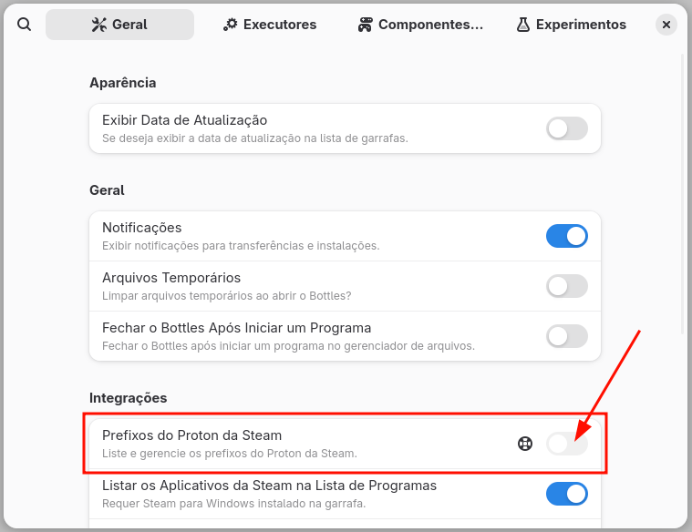
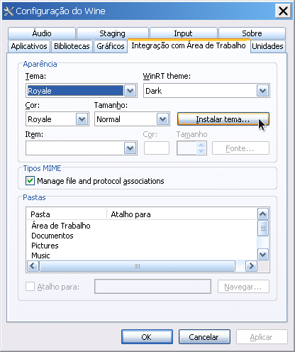

"Mas Linux roda jogos?"
Introdução
Foi se o tempo em que rodar jogos de PC no Linux era algo raro, hoje em dia não só temos clientes para a maioria das plataformas como até mesmo temos consoles baseados em Linux (como o SteamDeck da Valve). Para a maioria esmagadora dos títulos (certamente os que você mais gosta, os de longa data) basta utilizar uma camada de compatibilidade com Wine, Proton e DXVK e tá tudo certo.
Entendendo o básico
Mas o que é Wine?
Wine não é um emulador, mas sim uma camada de compatibilidade que permite que você execute aplicações do Windows no Linux e demais sistemas Unixlike dentro de prefixos, prefixos são como um diretório que trabalha como um ambiente Windows a parte do seu sistema operacional, que contém os arquivos necessários e área de instalação própria, de modo que se você precisa de versões e configurações específicas de Windows para cada jogo, cada jogo terá o seu ambiente independente. Você pode verificar o estado da compatibilidade do Wine com a sua biblioteca de software através desse link WineHQ.
O que é Proton?
Proton é uma camada de compatibilidade desenvolvida pela Valve especifica para jogos do Windows rodarem em sistemas operacionais baseados em Linux. Embora não seja perfeita é muito competente, você pode verificar o estado da compatibilidade com a sua biblioteca de jogos através desse link ProtonDB.
DXVK?
É uma ferramenta que interpreta as chamadas de API DirectX e as converte para Vulkan, em alguns casos aumentando de forma notável o desempenho.
E VKD3D?
Basicamente a mesma coisa porém específico para DirectX12.
Bottles
De todas as ferramentas para gerenciar versões e ambientes do Wine eu creio que de longe a mais simples seja o Bottles, você provavelmente vai achar na lojinha da sua distribuição (como Discover ou Gnome Software) ou pode instalar o flatpak através do comando:
flatpak install flathub com.usebottles.bottles
Pra quem é das antigas, o Bottles vai funcionar mais ou menos como a boa e velha interface do PlayOnLinux, em que você pode escolher versão, pode configurar, usar de executáveis naquele prefixo.
Atenção! O Bottles é recomendado para executáveis avulsos, seja como jogos antigos baseados em instalação por disco (como um Need for Speed Underground 2) ou para MMORPG's com clientes instalados através de executáveis baixados no próprio site (como o RagnaröK Online). Não use o bottles para instalar clientes ou jogos da Steam, Epic, e Amazon. Você pode instalar os executáveis sem DRM da GOG através do Bottles, mas o recomendado é através do Heroic Games Launcher.
Configurando o Bottles
O Bottles vai te ajudar a genrenciar os ambientes Wine que você deseja criar, ele cria "garrafas" (bela sacada inclusive), antes de mais nada então clique no + para criar uma garrafa.

Atenção!
Caso você queira gerenciar os prefixos da Steam pelo Bottles você pode selecionar as 3 barrinhas a direita dessa janela para acessar as opções, e na guia Integrações habilitar Prefixos do Proton da Steam.

Você pode então dar o nome para este ambiente, deixar uma configuração genérica para Aplicativos desktop, uma configuração genérica para jogos ou selecionar os componentes desejados. (Se você só vai instalar jogos, selecione o ambiente "Jogos" e configura o resto depois caso seja necessário).

Vamos supor que você queira instalar um launcher como o Ubisoft Connect, clique em Instalar Programas......

Note que já existe alguns scripts de instalação para os programas mais comuns.

Selecionando a opção Dependências você também pode instalar as dependências mais comuns.

Ao selecionar o menu Configurações você pode alterar o runner, a versão do DXVK, do VKD3D, ativar a opção de uso da placa de vídeo dedicada...

Indo em Configurações > Gerenciar Unidades você pode dispor diretórios do seu sistema Linux como pontos de partida para discos do Wine, muito útil caso queira instalar os jogos em um diretório específico no seu pc.

O Bottles já dispõe de ferramentas de atualização de componentes...

E sim isso quer dizer que você pode atualizar tanto o Proton-GE quando o DXVK e VKD3D através do próprio Bottles.

WineCFG
Para acessar o WineCFG, acesse a "garrafa" desejada, vá em Ferramentas > Ferramentas Legado Wine > Configuração.
Iniciando aplicativos de uma garrafa através de atalhos feitos a mão.
O Bottles tem a capacidade de criar atalhos na sua área de trabalho (se ele tiver as devidas permissões para isso), mas vamos supor que você tenha criado uma garrafa com o nome ubisoft_connect e nela você tenha adicionado o atalho para o XDefiant e queira iniciá-lo diretamente, e caso clique com o botão direito em cima desse ícone você vai direto para a janela de configuração do Bottles, para isso crie um arquivo com o nome de XDefiant.desktop em ~/.local/share/applications/ com o conteúdo conforme o exemplo abaixo:
[Desktop Entry]
Name=XDefiant
Exec=flatpak run --command=bottles-cli com.usebottles.bottles run -p 'XDefiant' -b 'ubisoft_connect'
Type=Application
Terminal=false
Categories=Game;
Icon=applications-games
Comment=Inicia XDefiant usando o Bottles.
Actions=Configure;
[Desktop Action Configure]
Name=Configurar no Bottles
Icon=com.usebottles.bottles
Exec=flatpak run --command=bottles-cli com.usebottles.bottles -b 'ubisoft_connect'
Como instalar a Steam?
Pelo fato da Valve ter adotado o Linux, na grande maioria das distribuições você vai encontrar um pacote nativo para a Steam na lojinha de aplicativos da sua distro, caso a sua distribuição não tenha um pacote nativo você pode instalar através do Flatpak com o comando:
flatpak install flathub com.valvesoftware.Steam
Pronto! Uma vez que a Steam está instalada, basta clicar com o botão direito no jogo que você quer, selecionar Propriedades..., depois Compatibilidade e marcar a caixa Usar ferramenta de compatibilidade e selecionar a versão desejada do Proton.
Quem diabos é GloriousEggroll? Como instalar Proton-GE na Steam?
GloriousEggroll é o responsável pela distribuição Linux Nobara, uma distro feita para jogos que recebe inúmeras modificações e atualizações especificas para isso. Em diversos casos a sua versão específica do Proton (o ProtonGE) roda melhor que a da própria Steam! Para instalar a sua versão do Proton acesso o Github do GloriousEggroll através desse link aqui. Baixe a última versão do Proton-GE (arquivo GE-ProtonX-XX.tar.gz), extraia esse arquivo para pasta e coloque em /home/SEU_USER/.steam/root/compatibilitytools.d. Feche e abra novamente a Steam, a versão do ProtonGE vai ser visível no menu de seleção "Ferramenta de compatibilidade".
Mas eu ainda preciso editar algo do Wine...
No caso dos jogos da Steam o diretório dos prefixos geralmente é $HOME/.steam/steam/steamapps/compatdata/ID_DO_JOGO/pfx caso os jogos sejam instalados no disco principal ou .../SteamLibrary/steamapps/compatdata/ID_DO_JOGO/pfx caso sejam instalados em um outro disco. Para os jogos do Heroic Launcher vai ser PASTA_DE_PREFIXOS/NOME_DO_JOGO/pfx/drive_c/.
Se você tiver o pacote wine instalado, você pode usar a ferramenta winecfg (embora não recomendado) no prefixo para fazer alguma alteração. Basta declarar a pasta do prefixo Wine como no exemplo abaixo:
WINEPREFIX=".../steamapps/compatdata/ID_DO_JOGO/pfx" winecfg
Ou...
Protontricks
...Use o Protontricks para isso, o Protontricks é um wrapper para os jogos da Steam. Instale-o com o comando:
flatpak install flathub com.github.Matoking.protontricks
Recomendo adicionar os aliases abaixo na sua configuração de terminal:
alias protontricks="flatpak run com.github.Matoking.protontricks"
alias protontricks-launch="flatpak run --command=protontricks-launch com.github.Matoking.protontricks"
E daí caso queira executar o menu do Protontricks para listar os prefixos disponíveis basta usar o comando:
protontricks
Caso queira executar a interface do Winetricks use o comando:
protontricks ID_DO_JOGO --gui
Caso queira executar a interface do Winecfg use o comando:
protontricks ID_DO_JOGO winecfg
Mas eu ainda preciso editar no diretório do jogo...
Também é tranquilo, você pode acessar a pasta diretamente através do endereço .../pfx/drive_c/users/steamuser, daí você pode acessar pastas como Saved games ou algo como My Documents/NOME_DO_JOGO (obviamente isso varia de jogo pra jogo).
E para jogos da Amazon, Epic e GOG?
Para esses casos você pode usar o Heroic Games Launcher, na grande maioria das distribuições você vai encontrar um pacote nativo na lojinha de aplicativos da sua distro, caso a sua distribuição não tenha um pacote nativo você pode instalar através do Flatpak com o comando:
flatpak install flathub com.heroicgameslauncher.hgl

Uma vez que o Heroic está instalado basta ir em Gerenciar Contas e logar na loja que você deseja usar.

Uma vez conectado toda a sua biblioteca será visível.
WineCFG, Winetricks, Executar .exe no prefixo
Basta clicar no jogo, acessar o menu Configurações do jogo e depois acessar as opções na parte inferior da janela.
Mas o jogo (x que usa anticheat) não funciona!
Bom, hoje em dia o Linux já tem tudo o que é necessário para rodar jogos, sem contar que mesmo para o desenvolvedor de jogos para Windows pode fazer com que seu jogo rode no Linux hoje sem muita dor de cabeça, porém algumas ferramentas de anticheat mais intrusivas simplesmente não dão suporte ao Linux, para verificar o suporte de anticheat para a sua biblioteca você pode acessar Are we anticheat yet?.
Permissões do Flatpak
O Flakpak é baseado no conceito de sandboxing então nem todo aplicativo pode acessar todo diretório ou todo recurso (como internet, por exemplo), se você quiser uma configuração mais visual você pode instalar o Flatseal com o comando abaixo:
* Lembrando que caso você esteja usando o KDE você pode apenas instalar o pacote flatpak-kcm e ter a mesma funcionalidade, não sendo necessário a instalação do Flatseal.
flatpak install flathub com.github.tchx84.Flatseal
Mas se você (assim como eu) quiser fazer manualmente você pode editar diretamente os arquivos de override se tiver o id do aplicativo. Para listar os aplicativos flatpak instalados execute o comando:
flatpak list --app
Para criar um override precisamos do ID do aplicativo, que no caso do Bottles é com.usebottles.bottles. O recomendado é liberar as permissões a nível de usuário para cada aplicação, no caso seria o diretório ~/.local/share/flatpak/overrides/id_do_aplicativo (não é nada recomendado mas você também pode liberar a nível de sistema /var/lib/flatpak/overrides/id_do_aplicativo). Vamos supor que queremos permitir gravação e leitura ao diretório /mnt/HD/games para o Bottles, para isso crie o arquivo ~/.local/share/flatpak/overrides/com.usebottles.bottles e insira o conteúdo:
[Context]
filesystems=/mnt/HD/games:rw;
Para verificar os overrides existentes para o usuário basta usar o comando abaixo:
flatpak override --user --show com.usebottles.bottles
* remova o --user caso queira ver os overrides de sistema.
E para gravar as as gameplays?
Obviamente vai ser com o OBS Studio, mas se você tentou gravar direto ao menos uma vez deve ter quebrado a cara com a performance e qualidade do vídeo, que por padrão são péssimas no Linux! Mas a verdade é que ter uma gravação de baixa latência e qualidade de ponta é bem mais fácil do que parece.
Bom, a primeira coisa que precisamos é o OBS, que pode ser facilmente instalado via flatpak com o comando:
flatpak install flathub com.obsproject.Studio
Ok, uma vez que temos o OBS precisamos do OBS VAAPI, que vai criar a interface de captura, você pode instalar ele através do pacote:
flatpak install com.obsproject.Studio.Plugin.GstreamerVaapi
Se tiver usando Arch Linux com yay você pode usar o comando:
yay -S obs-vaapi
OU usar um pacote pré-compilado ou mesmo compilar na sua máquina visitando o OBS VAAPI no Github.
Por fim podemos instalar o OBS-VKCAPTURE, que pode ser facilmente instalado via flatpak com o comando:
flatpak install com.obsproject.Studio.Plugin.OBSVkCapture
Se tiver usando Arch Linux com yay você pode usar o comando:
yay -S obs-vkcapture-git lib32-obs-vkcapture-git
OU usar um pacote pré-compilado ou mesmo compilar na sua máquina visitando o OBS-VKCAPTURE no Github.
Configurando o OBS
Para utilizar a interface OBS-VKCAPTURE nova abra o OBS e adicione a fonte Captura de Jogo, você não precisa selecionar nenhuma janela específica, basta deixar marcado Capturar qualquer janela, você pode desmarcar a gravação do cursor se assim desejar.

Para utilizar a interface OBS-VAAPI nova abra o OBS, vá em Configurações > Saída > Modo de saída: Avançado > Gravação e em Encoder de vídeo: selecione uma das opções VAAPI AV1, VAAPI H.264, VAAPI H.265 conforme a compatibilidade da sua placa.

Para apresentar o jogo como "capturável" para o OBS pasta adicionar o argumento abaixo nas opções de lançamento:
obs-gamecapture %command%

* Sim, a adição desse argumento também funciona no Heroic Game Launcher...
Você pode iniciar o jogo utilizando apenas a captura via Vulkan habilitada com o argumento:
env OBS_VKCAPTURE=1 %command%
Se você fez tudo certinho as chances são que você vai ter uma excelente qualidade de imagem com baixo uso de recursos e latência.
Mas eu quero ver meus FPS!

A ferramenta padrão para isso no Linux é o MangoHud, você pode instalar usando o comando:
flatpak install org.freedesktop.Platform.VulkanLayer.MangoHud
Caso queira habilitá-lo usando uma variável de ambiente para todos os jogos da Steam (porém somente em Vulkan) você pode usar o comando:
flatpak override --user --env=MANGOHUD=1 com.valvesoftware.Steam
Caso queira iniciar o MangoHud na execução do jogo basta adicionar mangohud %command% na linha de argumentos do jogos. Os jogos OpenGL também podem precisar de conexão dlsym. Adicione --dlsym ao seu comando como mangohud --dlsym %command% para Steam.
Para ver as opções de configuração da sua HUD você pode ver as variáveis através deste link.
Gamescope
Se tem uma ferramenta que pode te livrar de muita dor de cabeça ao lidar com jogos no Linux (especialmente te livrar de problemas crônicos que você seria obrigado a sofrer no Windows) é o Gamescope, segundo a página do Gamescope na Arch Wiki:" Gamescope é um microcompositor da Valve usado no Steam Deck. Seu objetivo é fornecer um compositor isolado adaptado para jogos e que ofereça suporte a muitos recursos centrados em jogos, como: Falsear resoluções; Upscaling usando Super Resolução AMD FidelityFX™ ou NVIDIA Image Scaling; Limitar taxas de quadros.".
Para iniciar a janela do gamescope basta adicionar os argumentos como no exemplo abaixo:
- gamescope -- %command%: Inicia o jogo dentro do Gamescope
- -W, -H: Define a resolução usada pelo gamescope (saída).
- -w, -h: Define a resolução usada pelo jogo (interna).
- -r: define um limite de FPS para o jogo. Especificado em quadros por segundo. O padrão é ilimitado.
- -o: define um limite de FPS para o jogo quando não está em foco. Especificado em quadros por segundo. O padrão é ilimitado.
- -F fsr: use AMD FidelityFX™ Super Resolução 1.0 para upscaling
- -F nis: use NVIDIA Image Scaling v1.0.3 para upscaling
- -S integer: use escalonamento por números inteiros.
- -S stretch: use escalonamento por esticar. o jogo preencherá a janela. (por exemplo, 4:3 para 16:9)
- -b: cria uma janela sem bordas.
- -f: cria uma janela em tela inteira.
- --backend: seleciona o backend de renderização, entre as opções estão:
- auto => autodetectar (padrão);
- drm => usar DRM backend (sessão de exibição independente);
- sdl => usar backend SDL;
- openvr => usar backend OpenVR (saídas para uma sobreposição VR);
- headless => usar backend headless (sem janela, sem saída DRM);
- wayland => usar backend Wayland.
- -e, --steam: habilita integração com Steam
- --mangoapp: Inicia com a sobreposição de desempenho mangoapp (mangohud) habilitada. Você deve usar isso em vez de usar mangohud no jogo ou gamescope.
- --adaptive-sync: habilita variable refresh rate (VRR)
- --hdr-enabled: habilita suporte para HDR10
Vamos supor que eu queira jogar Need for Speed Rivals, que sabidamente tem problemas com mudança de resolução interna, e eu queira deixar a resolução interna do jogo em 4K, a resolução da janela em 1080p e que tenha saída numa janela de tela cheia, o comando seria mais ou menos assim:
gamescope -W 1920 -H 1080 -w 3840 -h 2160 -f -- %command%
Se ao usar o Gamescope o movimento do mouse ficar errático você pode usar o argumento abaixo para tentar corrigir:
--force-grab-cursor
VkBasalt
Lembra do Reshade? Então, o VkBasalt nada mais é do que uma camada de pós-processamento para Vulkan, inclusive com a possibilidade de usar diversos shaders do próprio ReShade.
Quando se fala em pós-processamento, é um assunto imenso por si só, então nada de muitas firulas aqui pois isso deve ser estudado a parte, o que você precisa saber é que:
1 - O Arquivo de configuração fica em
~/.config/vkBasalt/vkBasalt.conf
2 - Se quiser habilitar em algum jogo da Steam basta usar o argumento
ENABLE_VKBASALT=1 %command%
Daí em diante, pode baixar o pacote de shaders do próprio ReShade e configurar como quiser. Como isso é caso a caso, o meu intuito aqui é mostrar pra você que a ferramenta existe para quem quer usar algo próximo do ReShade no Linux.
Captura Direta
O Gamescope expõe um fluxo de vídeo no PipeWire para gravação que você pode gravar usando o gstreamer. Instale o pacote gst-plugin-va para suporte VA-API ou gst-plugins-bad e nvidia-utils para suporte ao NVDECODE/NVENCODE. Por fim instale o gst-plugins-good para usar o plugin pulsesrc e gst-plugin-pipewire para suporte ao PipeWire.
Para verificar o suporte para VA-API use o comando:
gst-inspect-1.0 va
Para verificar o suporte para NVDECODE/NVENCODE use o comando:
gst-inspect-1.0 nvcodec
Caso os plugins não sejam encontrados você pode reconstruir o registro com o comando:
$ rm ~/.cache/gstreamer-1.0/registry.*.bin
Aqui estão algumas opções de comandos para gravação (lembre-se de substituir o encoder e parser conforme o seu retorno do gst-inspect-1.0):
Usando o encoder H264
gst-launch-1.0 --eos-on-shutdown pipewiresrc do-timestamp=true target-object=gamescope ! vah264enc ! h264parse ! mux. pulsesrc do-timestamp=true device="Recording_$(pactl get-default-sink).monitor" ! opusenc ! mux. matroskamux name=mux ! filesink location=gravação.mkv
Usando o encoder H265
gst-launch-1.0 --eos-on-shutdown pipewiresrc do-timestamp=true target-object=gamescope ! vah265enc ! h265parse ! mux. pulsesrc do-timestamp=true device="Recording_$(pactl get-default-sink).monitor" ! opusenc ! mux. matroskamux name=mux ! filesink location=gravação.mkv
Usando o encoder AV1
gst-launch-1.0 --eos-on-shutdown pipewiresrc do-timestamp=true target-object=gamescope ! vaav1enc ! av1parse ! mux. pulsesrc do-timestamp=true device="Recording_$(pactl get-default-sink).monitor" ! opusenc ! mux. matroskamux name=mux ! filesink location=gravação.mkv
Obviamente esses comandos podem (e devem) ser modificados para a sua específica. Considerando uma gravação para youtube em 1080p60, pode adicionar os argumentos abaixo:
... ! SEU_ENCODER rate-control=vbr bitrate=12000000 key-int-max=60 target-usage=2 ! SEU_PARSER ...
Alguns comandos úteis para o Proton-GE:
Caso esteja numa versão compatível do Proton-GE pode habilitar o Wayland usando o comando:
PROTON_ENABLE_WAYLAND=1
Caso esteja numa versão compatível do Proton-GE (e tenha o Wine-Wayland ativado) pode habilitar o HDR usando o comando:
PROTON_ENABLE_HDR=1
Caso esteja numa versão compatível do Proton-GE e queira usar o driver NTSYNC adicione o comando:
PROTON_USE_NTSYNC=1
Alguns jogos podem apresentar problemas com o ESYNC (Eventfd Synchronization), caso queira desativar adicione o comando:
PROTON_NO_ESYNC=1
Alguns jogos podem apresentar problemas com o FSYNC (Futex Synchronization), caso queira desativar adicione o comando:
PROTON_NO_FSYNC=1
Caso queira usar alguma DLL do diretório do jogo (muito útil para patches com injeção por DLL como FusionFix):
WINEDLLOVERRIDES="dinput8=n,b" %command%
Bônus - Editar estilo do prefixo
Alguns jogos possuem menus pré-inicialização que são horríveis de se usar com o tema padrão do Wine (e eu nem vou citar a estética...), se você usar o WineCFG no prefixo do jogo, pode alterar o tema do prefixo como na imagem abaixo:

Basta selecionar a opção Integração Área de Trabalho > Instalar tema... > Selecione o arquivo .msstyles do tema desejado e selecione-o em Tema:. Aqui tem uma lista de temas .msstyles.
Consolização
Eu já vi uma pá de gente reclamar de que "é muito complexo jogar no pc", "a experiência do console é mais simples", "eu prefiro jogar com um controle na mão sentado no sofá olhando pra tv", ok, da pra resolver isso muito fácil, crie o arquivo de dessão /usr/share/wayland-sessions/steam-big-picture.desktop com o conteúdo:
[Desktop Entry]
Name=Steam Big Picture Mode
Comment=Start Steam in Big Picture Mode
Exec=/usr/bin/gamescope -e -- /usr/bin/steam -tenfoot
Type=Application
[SeatDefaults]
autologin-user=seu_usuário
autologin-user-timeout=0
user-session=steam-big-picture
Obs: E sim isso serve para qualquer arquivo de sessão em /usr/share/wayland-sessions ou /usr/share/xsessions.
Agora você só precisa colocar o seu usuário no grupo autologin
groupadd -r autologin
gpasswd -a username autologin e assim que o computador iniciar você vai direto para a sessão do Steam Big Picture.